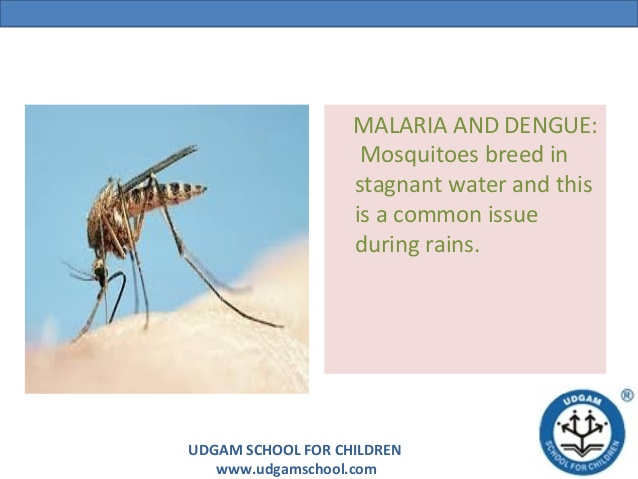

.jpg) |
Malaria is a disease caused by malarial mosquitos.Advancement of science has made malarial a common disease.Yet nearly 5000 and more people are affected by malarial every year and around 2000 people die because of this disease every year.Malaria mosquitos are commonly found in stagnated rainy water and in unclean environmnets.Only clean environments and destruction of malarial mosquitos can prevent us from malaria.

Dengue is also a common disease like malaria mainly during rainy reason.Dengue is caused by AIDS mosquitos.It is transmitted from people to people in all forms.Its a Communicable disease.Prevention from dengue can be done only when we have clean environments.Never allow dengue mosquitos to live.They live mainly in unclean surrondings mainly in stagnated water,tyres,vessels etc.Personal prevention is also important to stay away from dengue.
H1N1 is disease which transmitted from pigs.This influvenza virus mainly stays in cold places.It first affects the throat.It is communicable disease and it transmits in all forms.Without proper medicaiton a person may die.HIN1 is of 3 types.Handwash and salt-water cleaning are best remedie for influvenza.